The RFTM is an Open Source, collaborative testing methodology that can be applied to all Radio Frequency (wireless) technologies. Throughout this methodology, we'll use various real-world wireless protocol examples
Developing an FSK receiver step-by-step
Developing an ASK receiver step-by-step
Transmitting data
<span style="color:red"> NOTE: Before transmitting any data, please fully read the Legal considerations section </span>
RF shielding (Faraday cages)
If you need to transmit signals on bands for which it would normally be illegal to do so e.g. Broadcast radio or 3G cellular then this can be performed within an RF-shielded environment. These come in all shapes and sizes, from small:
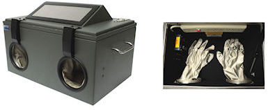
to large:
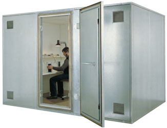
Direct connection using attenuators
Another approach is to directly connect your transmitter to your receiver via a cable so that no radio waves are transmitted. However, in order to do this without damaging the receiver you need to use in-line attenuators (see below) to reduce the signal level, as would occur if it was transmitted via an antenna
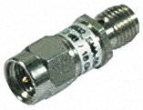
Developing a digital (FSK) transmitter step-by-step
If you have captured some data from a target system using a receiver and you now wish to modify that data and re-transmit it (for example if you are developing an RF-based fuzzer) the following process can be followed. This transmitter is assumed to use FSK modulation (this example is actually a transmitter developed for the io-homecontrol protocol)
Data source
The assumption is that you start with a data file containing the binary data bytes you want to send
Create a new flow-graph and set the "samp_rate_tx" variable to 4e6
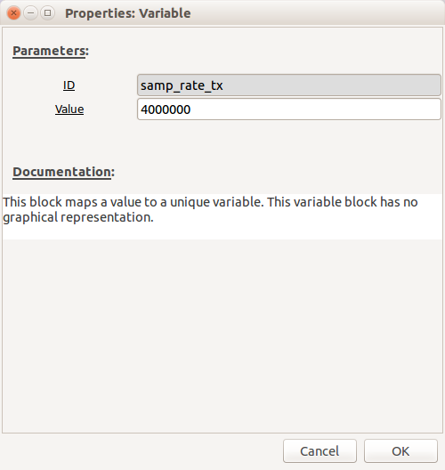
Add a "File Source" block and set the file to be your data file. Ensure that "Repeat" is set to "No" (unless you specifically want it to repeat)
Set the Baud rate
Having received the data, you should already know what the Baud rate should be set to. Add a new "Variable" block called "baud_rate" and set it to the correct value.
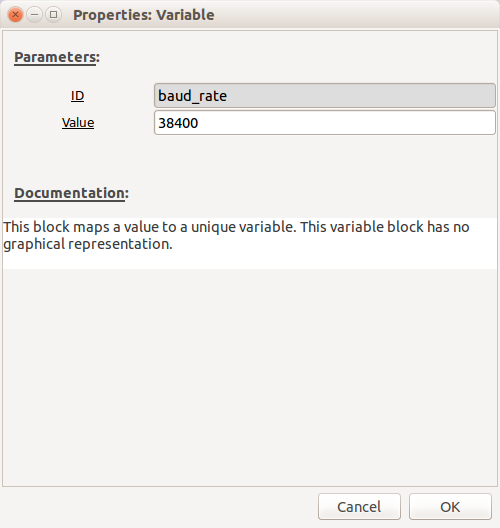
Modulation
Add a new "Variable" called "sps" (samples per symbol) and set it's value to be 10
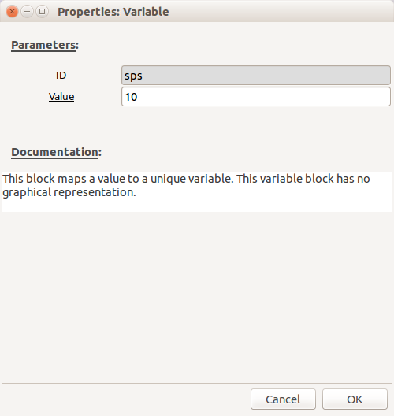
Change the default "samp_rate" "Variable" block to 384000 (10 x Baud rate, as we want 10 samples per symbol)
Add a "GFSK Mod" block, which will modulate the data using FSK. Configure the following settings:
- "Samples/Symbol": sps
- "Sensitivity": 1
- "BT": 1 (this will effectively remove the Gaussian filter and make it FSK rather than GFSK)
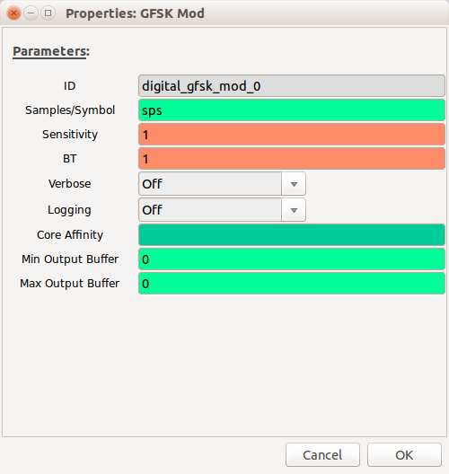
Your flow-graph should now look like this:
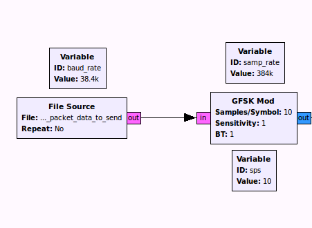
Resampling
We now need to match the sample rate of the data with the transmitter (as it is the final sample rate of the transmitter that will actually determine the rate that the data is transmitted).
Add a "Rational Resampler" block with the following settings:
- "Interpolation": samp_rate_tx (the output sample rate)
- "Decimation": samp_rate (the input sample rate)
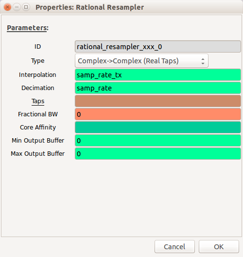
Adjust the signal level
We don't want to overload the input to the transmitter so we need to attenuate (reduce) the signal level.
Add a "Multiply Const" block and set "Constant" to be 0.8
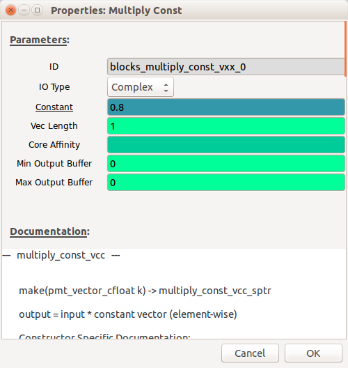
Configure the transmitter
We are now ready to transmit the signal.
Add a "Variable" block with the name "freq" and value equal to the transmit frequency:
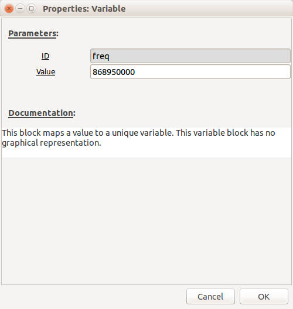
Add an "osmocom Sink" block with the following settings:
- "Ch0: Frequency": freq
- "Ch0: RF Gain (dB)": 30 (can be changed as required)
- "Ch0: IF Gain (dB)": 20 (can be changed as required)
- "Ch0: BB Gain (dB)": 20 (can be changed as required)
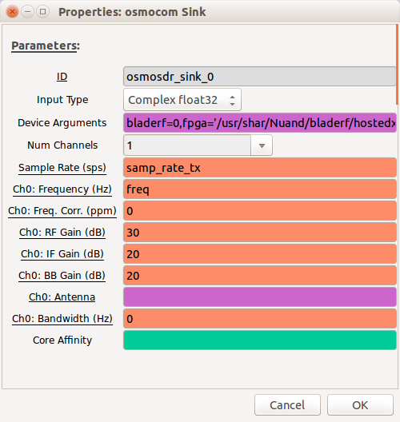
The complete transmitter flow-graph should now look like this:
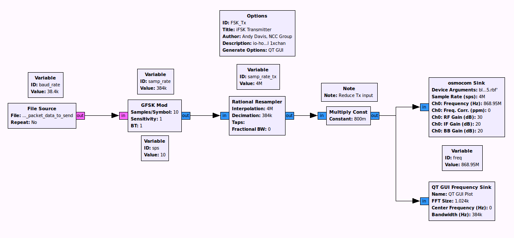
Communicating with the transmitter in real-time
Rather than using a file as a source you can use a "TCP Sink" block, bind it to a socket and send it data via TCP
Signals identification
In order to correctly demodulate a received signal you need to be able to identify it first. This section will provide some guidance around identifying common signals.
This website is a good place to start.
Amplitude Shift Keying (ASK)
The below example is the most simple form of ASK, known as On-Off Keying (OOK):
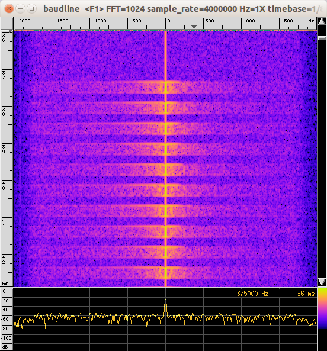
Frequency Shift Keying (FSK)
The below example is the most simple form of FSK, known as 2-FSK or Binary FSK:
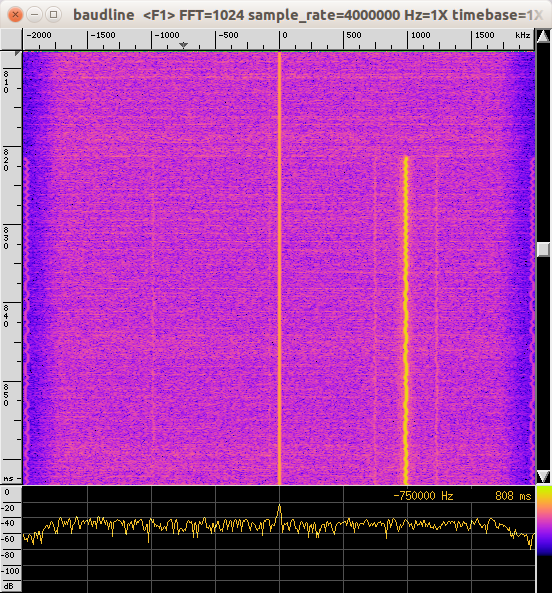
TODO - add more stuff here
Legal considerations
Unless you hold an Amateur Radio license or have had specific training about UK law with respect to the areas of the radio frequency spectrum and at what power levels you are allowed to transmit, it is highly recommended that you restrict yourself to only receiving. The amateur radio license is fairly easy to get and a few people in the company seem to have them. Try emailing DL-Tech and you may find someone local who is willing to lend you training materials or point you in the direction of a local club.
A high level overview of UK law with respect to radio transmitters can be found here